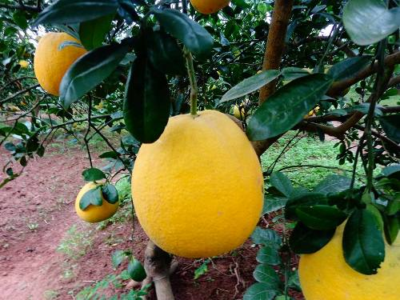

Bưởi da xanh Thới Lai
MÃ SẢN PHẨM
BDX12212
Nơi trồng: Xuân Khánh, Ninh Kiều, Cần Thơ
Gía bán hiện tại: 40.000đ/kg
Thông tin sản phẩm
Các bên có liên quan
Thông tin xác thực
Lô hàng
Thông tin sản phẩm
Mô tả
Bưởi da xanh được đánh giá là một trong những loại cây trồng có giá trị kinh tế cao. Giống bưởi này được trồng nhiều ở các tỉnh Đồng bằng Sông Cửu Long như Bến Tre, Hậu Giang... Bưởi da xanh đã được Bộ Nông nghiệp và Phát triển nông thôn Việt Nam công nhận là giống quốc gia và đã được xuất khẩu sang nhiều nước trên thế giới.
- Trái bưởi da xanh có dạng hình cầu, trọng lượng trung bình từ 1,2 – 2,5 kg/trái.
- Vỏ bưởi có màu xanh, khi chín chuyển sang hơi vàng, vỏ khá mỏng và dễ lột.
- Tép bưởi có màu hồng đỏ, bó chặt và dễ tách khỏi vách múi.
- Mùi thơm, vị ngọt không chua, tỷ lệ thịt/trái > 55%.
Công dụng
- Giàu dưỡng chất. Quả bưởi cung cấp một lượng chất xơ cao, cùng hơn 15 loại vitamin và khoáng chất cần thiết cho sức khỏe.
- Tăng cường hệ miễn dịch.
- Giảm cảm giác thèm ăn.
- Hỗ trợ điều trị bệnh cúm, sốt, sốt rét.
- Giảm tình trạng mệt mỏi.
- Chữa bệnh khó tiêu.
- Giúp hạ đường huyết.
- Đẹp da, kích thích mọc tóc.
Quy trình trồng trọt
- Chuẩn bị đất trồng: Đất cao đào hố ngang mặt đất và đắp vồng để dễ tưới trong mùa nắng, mùa mưa phá vồng để cây khỏi bị úng nước và bị chảy khi úng.
- Kích thước liếp rộng 5-8m, chiều dài tuỳ theo kích thước vườn nhưng không nên dài quá 30m. Quanh vườn nên đào mương rộng từ 1,5 - 2m, sâu 1-1,2m và đắp bờ cao; mương nội đồng rộng từ 0,5-1m, sâu 0,8-1m. Khi đào mương nên chú ý không nên đem lớp đất phèn (nếu có) lên mặt liếp, nếu đất chua cần bón vôi để nâng pH = 5,5 - 6.
- Nên chú ý đặt cống để điều tiết nước, hàng năm cần sửa sang liếp bằng cách bồi một lớp mỏng bùn và mở rộng mép liếp khi có thể.
- Kích thước hố trồng: Hố trồng bưởi đào theo hình vuông, kích thước 0,6x0,6m. Khoảng cách trồng 5x5m. Trong 3, 4 năm đầu, có thể trồng xen những loại cây ngắn ngày.
- Trồng cây: Nên trồng vào đầu mùa mưa, khi xuống giống nên tỉa bớt lá. Cây giống khi trồng nên đặt thẳng đối với cây tháp hoặc cây chiết có nhánh phân bố đều. Đặt nghiêng đối với cây chiết ít nhánh, giúp các đọt bên mọc lên để tạo tán.
- Bón phân: Cây mới trồng, bón lót 10kg phân chuồng, 0,5kg phân lân, 0,2kg vôi. Lượng phân bón tuỳ thuộc vào tình trạng sinh trưởng của cây.
- Chăm sóc: Làm sạch cỏ, thăm vườn thường xuyên, tỉa bỏ các cành vượt, cành sâu bệnh. Tưới dặm nếu nắng gắt, thoát nước khi bị úng. Tỉa bớt hoa quả vào năm chúng ra quá nhiều, làm cho bưởi kiệt sức. Thu hoạch tập trung và tăng cường phân bón vào những năm được mùa.
- Phòng trừ sâu bệnh: Bệnh thối gốc, chảy mủ, bệnh loét, sâu vẽ bùa, bọ xít xanh hại quả, sâu đục thân cành.
Vùng sản xuất

Vùng Thới Lai
121 , Đường CMT8, Thới lai, Ninh Kiều, Cần Thơ
Các bên có liên quan
Đây là thông tin về các bên có liên quan.
Thông tin xác thực
Đây là thông tin xác thực.
Lô hàng
Đây là thông tin về lô hàng.